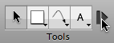
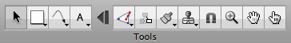

Tool palette tips
Expando-collapso technology


OmniGraffle 5 includes advanced expando-collapso technology. There's a button, after the Text tool by default, which you can click to collapse the tool palette down to just the leftmost items. This way you can save precious toolbar space for other buttons, but still expand the palette and get at the rest of the tools when you really need them.
You can move the divider in the Drawing Tools preferences to change which tools are available in the palette's collapsed state, or get rid of the expansion button entirely.
Persistent tool activation
By default, clicking a tool once activates it for one use; after that one use the Selection tool becomes active again. A tiny dark blue “1” icon appears on the tool to remind you. 
To activate a tool persistently, click it again. The icon goes away to show that the tool will stay active until you choose a different one.
You can change this behavior in the Drawing Tools preferences, so that tools are always (or never) activated persistently.
Inspecting a tool
Normally the inspectors are used to modify a selected object on the canvas. But you can also use them to change the style of objects a tool creates. Option-click the Shape, Pen, Line, or Text tool (or just click it, depending on the Drawing Tools preferences); the tool button gets highlighted in your highlight color to show that you are inspecting it. 
While the tool is being inspected, any change you make applies to the tool itself. For instance, if you make the Line tool's stroke color red, every line you draw with it will have a red stroke.
You can always select Restore Defaults from a tool's pop-up menu to reset it.
Style menus
The Shape, Pen, Line, and Text tools have style menus; these contain various styles that you can apply to the tool itself. Click the triangle in the corner of the button or click and hold on the button to open the menu. 
The very top item in the menu is the last style you set.
OmniGraffle Pro includes a Favorite Styles list, to which you can add styles you intend to reuse. You can switch freely between the current style at the top of the menu and the styles in the favorites list. Select Duplicate Style to add a copy of the selected style to the favorites list. Select Delete Style to remove the selected style from the favorites list. You can also add styles to the favorites list by Control- or right-clicking an object and choosing Add to Favorites, or by Option-dragging an object from the canvas to the tool button.
The Canvas Styles list shows the applicable styles if any exist on the canvas. If you choose one, a copy of it will replace the current style.
The Stencil Styles list shows available styles from the stencil you have open. If you choose one, a copy of it will replace the current style.
Select Inspect Style to focus the inspectors on the tool itself, so that you can change its style.
Select Restore Defaults to return the tool's style to its original, blandest settings.
Floating tool palette
If you like, you can open a tool palette window separate from the one in the toolbar; just choose Tool Palette from the Window menu. Drag the corner of the floating tool palette to reshape it, and position the window near your document window to attach it there magnetically.
Quick access to tools
Instead of clicking, you can press the number keys to activate tools. Each key from 1 to 0 corresponds to a tool in the palette, from left to right.
You can also set up hot keys in the Drawing Tools preferences.